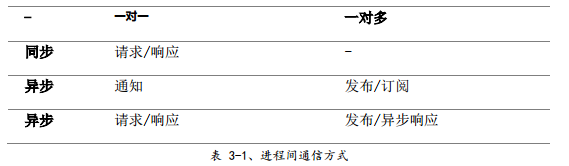

一、微服务简介
A.单体地狱
1.成功的应用有一个趋势，随着时间推移而变得越来越臃肿
2.复杂的单体应用本身就是持续部署的障碍
3.单体应用使得采用新框架和语言变得非常困难
B.微服务 — 解决复杂问题
1.思路是将应用程序分解成一套较小的互连服务。一个服务通常实现了一组不同的特性或功能。每个微服务都是一个迷你应用，包括了业务逻辑以及多个适配器
2.一些微服务会暴露一个供其他微服务或应用客户端消费的API，其他微服务可能实现了一个WebUI，在运行时，每个实例通常是一个云虚拟机（virtual machine,VM）或者一个Docker容器
3.他们之间的通信是由一个被称为API网关（API Gateway）的中介负责，API网关负责负载均衡、缓存、访问控制、API计量和监控
4.如果您想从微服务中受益，每一个服务都应该有自己的数据库模式，因为它能实现松耦合
C.微服务的优点
1.解决了复杂问题，把可能会变得庞大的单体应用程序分解成一套服务
2.这种架构使得每个服务都可以由一个团队独立专注开发
3.微服务架构模式可以实现每一个微服务独立部署
4.微服务架构模式使得每个服务能够独立扩展
D.微服务的缺点
1.微服务这个术语的重点过多偏向于服务的规模，有些开发者主张构建极细粒度的10至100LOC（代码行）服务，但小型服务只是一种手段，目标在于充分分解应用程序以方便应用敏捷开发和部署
2.微服务是一个分布式系统，使得整体变得复杂，开发者需要选择和实现基于消息或者RPC的进程间通信机制，模块间通过语言级方法/过程调用相互调用，这比单体应用要复杂得多
3.分区数据库架构，需要更新不同服务所用的数据库，通常不会选择分布式事务，不仅仅是因为CAP定理
4.测试微服务应用程序也很复杂，需要启动该服务及其所依赖的所有服务，或者至少为这些服务配置存根
5.实现了跨越多服务变更，在微服务中需要仔细规划和协调出现的变更至每个服务
6.部署基于微服务的应用程序也是非常复杂的
7.每个服务都有多个运行时实例，还有更多的移动部件需要配置、部署、扩展和监控，还需要实现服务发现机制，使得服务能够发现需要与之通信的任何其他服务的位置（主机和端口），需要开发人员能高度控制部署方式和高度自动化
二、使用API网关
A.客户端与微服务直接通信
1.问题：客户端的需求与每个微服务暴露的细粒度的API不匹配，公网下效率低下
2.问题：有可能使用了非web友好协议，一个服务可能使用了Thrift二进制rpc，而另一个可能使用AMQP消息协议，这些对浏览器还是防火墙都是不友好的，最好是在内部使用
3.缺点：难以重构微服务
B.使用API网关
1.API网关是一个服务器，是系统的单入口点，类似于面向对象设计模式中的门面（Facade）模式，封装了内部系统架构，并针对每个客户端提供一个定制API，还可用于认证、监控、负载均衡、缓存和静态响应处理
2.API网关负责请求路由、组合和协议转换，通常会调用多个微服务和聚合结果来处理一个请求，可以在Web协议（如HTTP和WebSocket）和用于内部的非Web友好协议之间进行转换
3.API还可以为每个客户端提供一个定制API，通常为客户端暴露一个粗粒度的API
C.API网关的优点与缺点
1.主要好处是它封装了应用程序的内部结构，客户端只与网关通信，而不必调用特定的服务
2.缺点是它是另一个高度可用的组件，需要开发、部署和管理，API网关可能会成为开发瓶颈
3.重要的是更新API网关的过程应尽可能地放缓一些，否则，开发人员将被迫排除等待网关更新
D.实施API网关
1.在一个支持异步、非阻塞I/O平台上构建API网关是很有必要的。Node.js、Nginx Plus
2.API网关通过简单地把他们（请求）路由到适当的后端服务来处理一些请求。它通过调用多个后端服务并聚合结果来处理其他请求，API网关应该并发执行独立请求
3.使用传统的异步回调方式来编写API组合代码会很快使您陷入回调地狱，好的方式是使用响应式方法以声明式编写API网关代码
4.一个基于微服务的应用程序是一个分布式系统，必须使用一个进程间（inter-process）通信机制，有两种方案：一是使用基于消息的异步机制，如JMS、AMQP、ZeroMQ等；另一种采用了同步机制，如HTTP和Thrift；API网关需要支持各种通信机制
5.API网关需要知道与其通论的每个微服务的位置（IP地址和端口），需要使得系统的服务发现机制：服务端发现或客户端发现，API网关必须能够查询服务注册中心，该注册中心是所有微服务实例及其位置的数据库
6.当一个服务调用另一个响应缓慢或不可用的服务时，API网关不应该无期限地等待下游服务，如何处理故障问题取决于决定的方案和哪些服务发生故障
7.如果可以，API网关还可以返回缓存数据，通过返回默认数据或缓存数据，确保系统发生故障时最小程度上影响到用户体验
8.Netflix Hystrix是一个非常有用的用于编写调用远程服务代码的库
三、进程间通信
A.简介
1.服务必须通过进程间通信（IPC）机制进行交互
B.交互方式
1.第一类：
- 一对一，每个客户端请求都由一个服务实例处理
- 一对多，每个请求由多个服务实例处理
2.第二类：
- 同步，客户端要求服务及时响应，在等待过程中可能会发生阻塞
- 异步，客户端在等待响应时不会发生阻塞，但响应（如果有）不一事实上立即返回

3.一对一交互，包括同步（请求/响应）与异步（通知与请求/异步响应）：
- 请求/响应，客户端向服务发出请求并等待响应。客户端要求响应及时到达。在基于纯种的应用程序中，发出请求的线程可能在等待时发生阻塞
- 通知（又称为单向请求），客户端向服务发送请求，但不要求响应
- 请求/异步响应，客户端向服务发送请求，服务异步响应。客户端在等待时不发生阻止，适用于假设响应可能不会立即到达的场景
4.一对多交互，异步类型：
- 发布/订阅客户端，发布通知消息，由零个或多个感兴趣的服务消费
- 发布/异步响应，客户端发布请求消息，之后等待一定时间来接收消费者的响应
C.定义API
1.无论使用何种IPC机制，使用接口定义语言（interface definition language,IDL）来严格定义服务API都是非常有必要的
2.在对需要实现的服务API定义进行迭代之后，可以通过编写接口定义并与客户端开发人员进行审阅来开始开发服务
D.演化API
1.需要逐步部署服务的新版本，以便新旧版本的服务同时运行
2.如果使用了基于HTTP的机制（如REST），一种方法是将版本号嵌入到URL中
E.处理局部故障
1.处理局部故障的策略：
- 网络超时，不要无限期地阻塞，始终使用超时方案
- 限制未完成的请求数量，对客户端拥有特定服务的未完成请求的数量设置上限
- 断路器模式，追踪成功和失败请求的数量。如果错误率超过配置阈值，则断开断路器
- 提供回退，请求失败时执行回退逻辑
F.IPC技术
1.基于HTTP的REST或Thrift
2.异步、基于消息的通信机制，如AMQP或STOMP
3.基于文本的格式，如JSON或XML
4.使用如Avro或Protocol Buffers等二进制格式（更加高效）
G.异步、基于消息的通信
1.客户端通过发送消息向服务发出请求，如果服务需要回复，则通过向客户端发送一条单独的消息来实现，由于通信是异步的，因此客户端不会阻塞等待回复，客户端被假定不会立即收到回复
2.两种通道
- 点对点通道，发送一条消息给一个确切的、正在从通道读取消息的消费者
- 发布订阅通道，将每条消息传递给所有已订阅的消费者
3.大量的开源消息系统：RabbitMQ、Apache Kafka、Apache ActiveMQ、NSQ
4.使用消息传递的优点：
- 将客户端与服务分离，服务实例对客户端而言是透明的，客户端不需要使用发现机制来确定服务实例的位置
- 消息缓冲，将消息写入通道队列，直到消费者处理它们
- 灵活的客户端—服务交互
- 毫无隐瞒的进程间通信
5.缺点：
- 额外的复杂操作，消息传递系统是一个需要安装、配置和操作的系统组件。消息代理必须高度可用
- 实施基于请求/响应式交互的复杂性
H.同步的请求/响应IPC
1.客户端向服务器发送请求，该服务处理该请求并返回响应
2.两种流行协议分别是REST和Thrift
3.REST
- 资源是REST的关键概念，通常表示业务对象或业务对象的集合
- 使用HTTP动词（谓词）来操纵资源，通过URL引用
- REST成熟度模型：
- 级别0的API客户端通过向其唯一的URL端点发送HTTP POST请求来调用该服务，每个请求都被指定要执行的操作、操作的目标（如业务对象）以及参数
- 级别1的API支持资源概念
- 级别2的API使用HTTP动词（谓词）执行操作：GET检索、POST创建、PUT更新
- 级别3的API基于非常规命名原则设计，基本思想是GET请求返回的资源的表述，包含用于执行该资源上允许的操作的链接
- 使用基于HTTP的协议的好处：
- 简单易懂
- 可以使用浏览器来测试 HTTP API
- 直接支持请求/响应式通信
- 属于防火墙友好
- 不需要中间代码，简化系统架构
- 缺点：
- 仅直接支持请求/响应的交互方式
- 因为直接通信，所以必须在交换期间都运行着
- 必须知道每个服务实例的位置（即URL）
4.Thrift
- 是一个用于编写跨语言RPC客户端和服务器skeleton，由一个或多个服务组成，定义类假于一个Java接口，是强类型方法的集合
- 支持多种消息格式：JSON、二进制和压缩二进制
I.消息格式
1.两种主要的消息格式
- 文本：JSON、XML，人类可读，自描述
- 二进制：二进制Thrift，Protocol Buffers和Apache Avro
四、服务发现
A.为何使用服务发现
1.服务实例具有动态分配的网络位置。此外，由于自动扩缩、故障与升级，整级服务实例会动态变更。因此，您的客户端代码需要使用更精确的服务发现机制
2.两种主要的服务发现模式：客户端发现（client-side discovery）与服务端发现（server-side discovery）
B.客户端发现模式
1.客户端负责确定可用服务实例的网络位置和请求负载均衡。客户端查询服务注册中心（service registry），它是可用服务实例的数据库，之后，客户端利用负载均衡算法选择一个可用的服务实例并发出请求
2.服务实例的网络位置在服务注册中心启动时被注册，当实例终止时，它将从服务注册中心移除，通常使用心跳机制周期性地刷新服务实例的注册信息

3.优点：相对简单，可以实现智能的，特定于应用程序的负载均衡决策
4.缺点：将客户端与服务注册中心耦合在一起，必须为服务客户端使用的每种编程语言和框架实现客户端服务发现逻辑
5.Netflix OSS提供了一个很好的客户端发现模式示例，Netflix Eureka是一个服务注册中心，Netflix Ribbon是一个IPC客户端，用于在可用服务实例之间请求负载均衡
C.服务端发现模式
1.客户端通过负载均衡器向服务发出请求，负载均衡器查询服务注册中心并将每个请求路由到可用的服务实例，服务实例由服务注册中心注册与销毁

2.AWS Elastic Load Balancer（ELB）是一个服务端发现路由示例
3.HTTP服务器和负载均衡器（如Nginx Plus和Nginx）也可以作为服务端发现负载均衡器
4.优点：把发现的细节从客户端抽象出来，消除了为服务客户端使用的每种编程语言和框架都实现发现逻辑的必要性
5.缺点：除非负载均衡器由部署环境提供，否则您需要引入这个高可用系统组件，并进行设置和管理
D.服务注册中心
1.服务注册中心（service registry）是服务发现的一个关键部分，是一个包含了服务实例网络位置的数据库。服务注册中心由使用了复制协议（replication protocol）来维护一致性的服务器集群组成
2.Netflix Eureka、etcd、Consul、Apache ZooKeeper
E.服务注册方式
1.服务实例自我注册，即自注册模式
2.使用其他系统组件来管理服务实例的注册，即第三方注册模式
F.自注册模式
1.服务实例负责在服务注册中心注册和注销自己。如果有必要，服务实例通过发送心跳请求来防止其注册信息过期
2.好处是相对简单，不需要任何其他系统组件，缺点是它将服务实例与服务注册中心耦合
G.第三方注册模式
1.服务实例不负责再向服务注册中心注册自己，该工作将由被称为服务注册器（service register）的另一系统组件负责
2.服务注册器通过轮询部署环境或订阅事件来跟踪运行实例集的变更情况
3.好处是服务与服务注册中心之间解耦，缺点是除非部署环境内置，否则同样需要引入这样一个高可用系统组件，并进行设置和管理
五、事件驱动数据管理
A.微服务和分布式数据管理问题
1.使用关系型数据库的一个主要优点是应用程序可以使用ACID事务，另一大好处是它提供了SQL语言
2.每个微服务所拥有的数据对当前微服务来说是私有的，只能通过其提供的API进行访问
3.一个分区的数据存储混合持久化架构具有许多优点，包括了松耦合的服务以及更好的性能与可扩展性
B.事件驱动架构
1.微服务在发生某些重要事件时发布一个事件，其他微服务订阅了这些事件，当微服务接收到一个事件时，它可以更新自己的业务实体
2.可以使用事件实现跨多服务的业务事务
3.优点：能够实现跨越多服务并提供最终一致性事务，使得应用程序能够维护物化视图
4.缺点：其编程模型比使用ACID事务更复杂，订阅者必须要检测和忽略重复的事件
C.实现原子性
1.标准方法是使用涉及到数据库和Message Broker的分布式事务
D.使用本地事务发布事件
1.应用程序使用仅涉及本地事务的多步骤过程来发布事件，诀窍在于存储业务实体状态的数据库中有一个用作消息队列的EVENT表

2.好处是保证了被发布的事件每次更新都不依赖于2PC，事件可以消除推断的需要
3.缺点是很容易出错
E.挖掘数据库事务日志
1.使用线程或进程发布事件，该进程或线程对数据库的事务或者提交日志进行挖掘，当更新数据库时，更改信息被记录到数据库的事务日志中，Transaction Log Miner线程或进程读取事务日志并向Message Broker发布事件

2.好处是它能保证被发布的事件每次更新都不依赖于2PC，可以通过将事件发布与应用程序的业务逻辑分离来简化应用程序
3.缺点是事务日志的格式对于每个数据库来说都是专有的，记录于事务日志中的低级别更新可能难以对高级业务事件进行逆向工程
F.使用事件溯源
1.事件溯源通过使用完全不同的、不间断的方式来持久化业务实体，实现无2PC原子性。应用程序不存储实体的当前状态，而是存储一系列状态改变事件。通过无回放事件来重建实体当前状态。由于保存事件是一个单一操作，因此具有原子性
2.事件被持久化在事件存储中，事件存储是一个事件数据库，该存储有一个用于添加和检索实体事件的API
3.好处：可以在状态发生变化时可靠地发布事件，解决了数据一致性；持久化的是事件而不是领域对象，避免了对象关系阻抗失配问题；提供对业务实体所做更改的100%可靠的审计日志；业务逻辑包括松耦合的交换事件业务实体，从单体应用程序迁移到微服务架构更加容易
4.缺点：是一种不同而陌生的编程风格，存在学习曲线；事件存储仅支持通过主键查找业务实体；必须使用命令查询责任分离（CQRS）来实现查询，应用程序必须处理最终一致的数据
六、选择部署策略
A.动机
1.微服务应用程序由数十甚至上百个服务组成，服务以不同的语言和框架编写，每个都是一个迷你的应用程序，需要根据该服务的需求运行每个服务的一定数量的实例，必须为每个服务实例提供相应的CPU、内存和I/O资源
B.单主机多服务实例模式
1.单主机多服务实例（Multiple Service Instances per Host）模式，可以提供一个或多个物理主机或虚拟主机，并在每个上运行多个服务实例，每个服务实例在一个或多个主机的标准端口上运行
2.一种变体是每个服务实例都是一个进程或进程组
3.另一个变体是在同一进程或进程组中运行多个服务实例
4.优点：资源使用率相对较高，多个服务实例共享服务器及其操作系统。如果进程或进程组运行了多个服务实例，则效率更高；部署服务实例相对较快；由于缺乏开销，通常启动一个服务是非常快的
5.缺点：服务实例很少或者没有隔离，除非每个服务实例是一个单独的进程，一个行为不当的服务实例可能会占用掉主机的所有内存或CPU；部署服务的运维团队必须了解执行此操作的具体细节
C.每个主机一个服务实例模式
1.每个主机一个服务实例（Service Instance per Host）模式，在主机上单独运行每个服务实例，每个虚拟机一个服务实例模式和每个容器一个服务实例模式
2.每个虚拟机一个服务实例模式，将每个服务打包为一个虚拟机（VM）镜像，每个服务实例都是一个使用该VM镜像启动的VM

3.每个虚拟机一个服务实例模式的优点：每个服务实例运行是完全隔离的；可以利用成熟的云基础架构；封装了服务的实现技术；
4.每个虚拟机一个服务实例模式的缺点：资源利用率较低；公共IaaS中的VM通常是收费的，无论他们是处于繁忙还是空闲；部署新版本的服务时通常很慢；要对很多未划分的重担负责；
5.每个容器一个服务实例（Service Instance per Container）模式，每个服务实例都在其自己的容器中运行（Docker）

6.容器模式的优点：将服务实例彼此隔离，轻松监控每个容器所消耗的资源，封装了服务实现技术，容器管理API作为管理服务的API；容器是轻量级技术，可以快速构建，也可以很快地启动；
7.容器模式的缺点：不成熟，不像VM那样安全，因为共享了主机的OS内核；需要负责划分容器镜像管理重担；通常部署在一个按单个VM收费的基础设施上，可能会产生超额配置VM的额外成本，以处理负载峰值；
D.Serverless部署
1.AWS Lambda
七、重构单体为微服务
A.微服务重构概述
1.一个不要使用的策略是“大爆炸”重写，就是您将所有的开发工作都集中在从头开始构建新的基于微服务的应用程序
2.应该逐步重构单体应用程序，逐渐添加新功能，并以微服务的形式创建现有功能的扩展——以互补的形式修改单体应用，并且一同运行微服务和修改后的单体
B.策略一：停止挖掘
1.洞穴定律：当你身处在一个洞穴中，你应该停止挖掘
2.当你的单体应用变得难以管理时，应该停止扩张，避免使单体变得更大
3.三种策略来访问单体数据：
- 调用由单体提供的远程API
- 直接访问单体数据库
- 维护自己的数据副本，与单体数据库同步
4.粘合代码，将服务与单体集成，位于单体、服务或两者中的粘合代码负责数据集成，有时被称为防护层（anti-corruption layer），因为粘合代码阻止了服务被遗留的单体领域模型的概念污染，这些服务具有自己的原始领域模式
C.策略二：前后端分离
1.缩小单体应用的一个策略是从业务逻辑层和数据访问层拆分出表现层：
- 表现层（Presentation Layer,PL）处理HTTP请求并实现（REST） API或基于HTML的WebUI组件，通常存在大量代码
- 业务逻辑层（Business Logic Layer,BLL）作为应用程序核心，实现业务规则的组件
- 数据访问层（Data Access Layer,DAL）访问基础架构组件的组件，如数据库和消息代理
2.业务层具有由一个或多个门面组成的粗粒度API，其封装了业务逻辑组件。一个应用程序包含表现层，另一个应用程序包含业务和数据访问逻辑
3.优点：使您能够独立于彼此开发、部署和扩展这两个应用，允许表现层开发人员在用户界面上快速迭代，可以轻松执行A/B测试；暴露了可以被您开发的微服务调用的远程API
4.只是一个局部解决方案，两个应该程序中的一个或两个很可能是一个无法管理的单体，需要使用第三种策略来消除剩余的整体或单体
D.策略三：提取服务
1.将庞大的现有模块转变为独立的微服务，每次提取一个模块并将其转换成服务时，单体就会缩小
2.从容易提取的几个模块开始，将得到微服务的相关经验，之后提取能给你最大利益的模块；提取频繁更改的模块通常是有益的；提取与单体的其他模块有显著不同的模块也是有益的；
3.提取模块第一步是在模块和单体之间定义一个粗粒度接口；一旦实现了粗粒度接口，就可以将模块变成独立的服务，必须编写代码以使单体和服务通过使用进程间通信（IPC）机制的API进行通信；第二个重构步骤是将模块转换为一个独立服务；
ee16